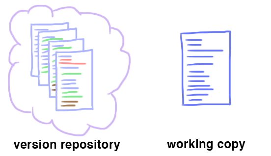
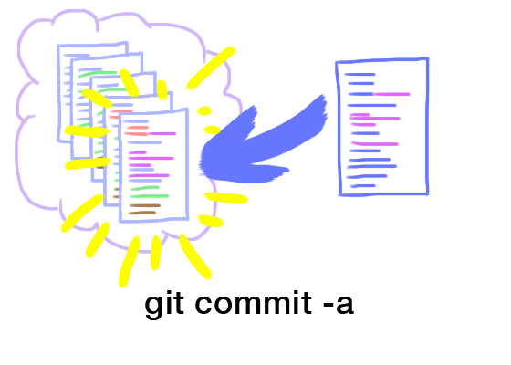

O Git trabalha com unidades chamadas de
A cópia em andamento consiste em arquivos normais organizados em estuturas de diretório. E a versão do Repositório armazena suas versões anteriores. Podemos considerar dessa forma:
Digamos que você tenha alterado a sua cópia em andamento. O Git não faz o track automático de cada alteração. O comando 'git commit -a' tira uma "foto" do seu diretório atual e salva no repositorio de versão.
-a significa "Comite todas as alterações no diretorio em andamento"Junto com o Commit você deve adicionar uma mensagem explicativa sobre as alterações que estão sendo feitas:
git commit -a "criando a pagina de conceitos"
Após ter commitado suas alterações, chegou a hora de copiar seu repositório de versões para um repositório remoto.
No nosso caso, estamos usando o GitHub. Para isso basta executar o comando git push
Caso esteja configurando um repositório pela primeira vez, você deve adicionar o repositório remoto.
git remote add origin git@github.com:user/repositorio
git push -u origin master
Pronto! Seu repositório está configurado, nas próximas vezes, basta utilizar o git push
Caso esteja trabalhando em mais de um dispositivo, ou trabalhando em equipe, você deve sempre manter seu repositório atualizado.
Para isso, faça git pull regularmente